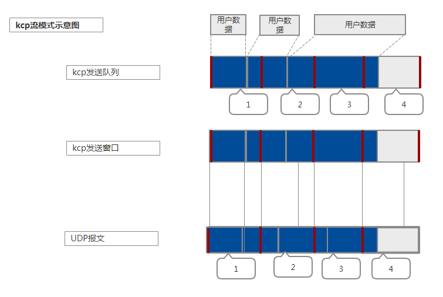
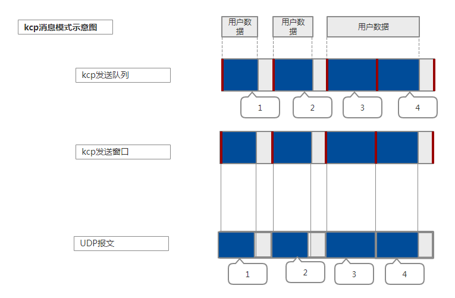

kcp源码解析
- 相关变量
- RTO计算（Retransmission timeout）
- Segment头部
int ickp_input(ikcpcb *kcp, const char *data, long size)int ikcp_recv(ikcpcb *kcp, char *buffer, int len)int ikcp_peeksize(const ikcpcb *kcp)int ickp_send(ikcpcb *kcp, const char *buffer, int len)void ikcp_flush(ikcp *kcp)- 参考文献
kcp是一个实现了类似tcp的重传、流控、拥塞控制等机制的传输协议，它没有指定传输协议，但是一般情况下都会用udp来传输， 相当于用udp实现的tcp协议。它在不稳定的网络环境中采用更激进的方法来获得比tcp更快的传输速度，代价就是会消耗更多的流量。 跟tcp一样，kcp采用滑动窗口机制来实现流控，通过重传机制保证了可靠性，通过慢启动，拥塞避免，快速重传和快速恢复来实现拥塞控制。
kcp支持两种模式：流模式和消息模式。

流模式具有更高网络利用率，更大的传输速度，但是解析数据相对更复杂。

消息模式具有更小的网络利用率，更小的传输速度，但解析数据更简单。
相关变量
| 字段 | 含义 | 注释 |
|---|---|---|
| rcv_wnd | receive window | 接收窗口大小 |
| rmt_wnd | remote window | 远端可接收窗口 |
| snd_wnd | send window | 发送窗口大小 |
| cwnd | congestion window | 拥塞窗口大小 |
| rcv_buf | receive buffer | 接收缓冲区，缓冲底层接收的数据，组装连续以后拷贝到接收队列 |
| rcv_queue | receive queue | 接收队列，接收的连续数据包，上层应用可以直接使用，不能超过接收窗口大小 |
| snd_queue | send queue | 发送队列，上层应用数据分片后加入发送队列 |
| snd_buf | send buffer | 发送缓冲区，已发送尚未确认的包 |
| buffer | 调用output发送的数据 | |
| probe | ICKP_CMD_WASK IKCP_CMD_WINS | |
| acklist | sn,ts | 待发送的ack列表 |
| fastresend | 快速重传门限，无须等待超时，如果n没收到ack但是收到了n+1,n+2,...n+fastresend那么立即重传n | |
| ssthresh | slow start thresh | 拥塞窗口阈值 |
| incr | 可发送的最大数据量 | |
| stream | stream mode | 是否使用流模式 |
RTO计算（Retransmission timeout）
kcp的重传超时计算方法参考了tcp的实现Computing TCP's Retransmission Timer，不过在参数设置上更加激进。 计算过程主要维护两个变量：
- SRTT: smoothed round-trip time
- RTTVAR: round-trip time variation
接收端收到确认包以后根据rtt更新这两个变量，并重新计算rto值。报文超时以后tcp的rto会翻倍， kcp中声称采用的是1.5倍，然而代码中实际上是线性增加，不知道是作者有意为之还是实现bug。
Segment头部
| 含义 | 会话id | 包类型 | 是否分片 | 发送端接收窗口 | 时间戳 | 包序列号 | 未确认包序号 | 数据长度 | 数据 |
|---|---|---|---|---|---|---|---|---|---|
| 字节数 | 4 | 1 | 1 | 2 | 4 | 4 | 4 | 4 | len |
| 字段名 | conv | cmd | frg | wnd | ts | sn | una | len | data |
| 全名 | conversation id | command | fragment | window | timestamp | segment number | unacknowledge | length | data |
报文字段含义：
| 字段名 | 含义 |
|---|---|
| conv | 通信双方需要保证相同的会话id |
| cmd | ICKP_CMD_PUSH/IKCP_CMD_ACK/IKCP_CMD_WASK/ICKP_CMD_WINS |
| wnd | 剩余接收窗口大小（接收窗口大小 - 接收队列大小） |
| ts | message发送时刻的时间戳 |
| sn | 分片segment序号 |
| una | 待接收消息序号（接收滑动窗口左端） |
| frg | 分片ID，从大到小，0表示最后一个分片 |
| fastack | 收到ack时计算的该分片被跳过的累积次数 |
| xmit | 分片发送的次数，每发送一次加1,超出dead_link，说明目标不可达 |
| resendts | 下一次超时重传的时间戳 |
| rto | 该分片的超时重传等待时间 |
| len | 数据长度 |
| data | 数据 |
int ickp_input(ikcpcb *kcp, const char *data, long size)
底层收包后调用，再由上层通过recv获得处理后的数据。 循环从data中取出kcp包。直到剩下的长度小于包头长度退出循环.
拆包流程：
- 长度小于包头长度24，退出循环。
- 构造包头，分别检查会话id，数据长度，包体类型。
- 设置远程剩余接收窗口大小。
- 将对方已经确认收到的包从发送缓存snd_buf中删除，相当于发送窗口右移。
- 计算本地真实snd_una，也就是下一个等待确认的发送包。
- 如果还有未确认的包，为发送窗口左端包序列号
- 如果没有未确认包，即发送窗口为空，则为下一个发送包snd_nxt
- 根据包的不同类型分别处理
- ACK包：
- 计算rtt，更新rto，更新算法参考rfc6298
- 从发送窗口中删除对应的包，并更新此包之前未确认包的fastack信息
- PUSH数据包：
- 判断收到的包的sn是不是位于区间：[rcv_nxt, rcv_nxt+rcv_wnd), 是则继续，否则丢弃
- 在接收窗口内，将其加入acklist，下一次flush的时候确认
- 构造一个kcp包，判断是否重复，如果不是重复包，插入接收缓存rcv_buf中对应位置
- 将rcv_buf中的已经收到的连续包移到接收队列rcv_queue中，供上层应用读取，并从rcv_buf中移除
- WASK包：
- 设置probe的TELL标记，flush的时候推送
- WINS包：
- 无须处理，因为之前已经设置了对方的剩余接收窗口大小
- ACK包：
所有包处理完毕以后，根据对方确认包的信息，更新拥塞窗口大小。
- 如果拥塞窗口小于对方剩余接收窗口，则需要更新
- 如果拥塞窗口尚未达到ssthresh（慢启动门限），cwnd++
- 如果大于ssthresh,
int ikcp_recv(ikcpcb *kcp, char *buffer, int len)
- 将接收队列中的消息传递给上层应用，因为消息会被拆分成kcp包，所以消息长度需小于接收队列长度*报文长度。
- 将接收缓冲中的连续报文拷贝到接收队列。
- 如果接收队列从满到不满，推送窗口通知消息给发送端，通知有接收窗口，可以继续发送新的报文。
int ikcp_peeksize(const ikcpcb *kcp)
检查接收队列中是否有一个完整的消息，并返回消息的长度。
int ickp_send(ikcpcb *kcp, const char *buffer, int len)
发送应用层的数据，会根据mtu大小分片，每个分片加上segment头部24字节，加入发送队列snd_queue。
根据stream字段区分流模式和消息模式。不同模式组包的机制不一样。如果是消息模式，分片数据的frg字段从count-1到0,0表示分片结束。
void ikcp_flush(ikcp *kcp)
实际发送数据的接口。
- 发送acklist中的ack消息
- 如果对方接收窗口为0，需要发送IKCP_CMD_WASK消息，检查probe对方接收窗口是否ready
- 发送自己的接收窗口大小
- 发送数据